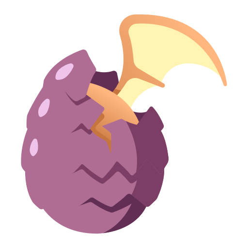

Infrastructure
deploy
Services deployment & server setup
monitoring
Services monitoring. Data collected with Loki, Promtail, cAdvisor, Prometheus. Monitored with Grafana.

Services
arena
The arena service is the service that will manage all the games & wizzards accounts in the Arena products.
auth
Main authentification service. Manages registrations & token generation.
bots
Bot service to act like a human in the games. The bots should not be used for ranked games & tournaments.
messaging
Simple realtime messaging system. Contains an API to send message through sockets, where clients can subscribe. It's lighter than Apache Kafka because we have simple needs here.
rest
Rest API. They are all static assets in the API, such as cards, decks, avatars, game types, etc.
rooms
The rooms service will manage discussions between players inside rooms, contained in subjects.
website
Website made with Sails.js
